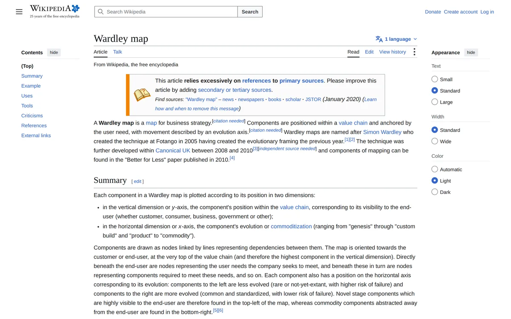

wardley-maps.sgit.ai / Resources / Wikipedia: Wardley map
Wikipedia: Wardley map
Primary source Live reference

What it is
The most useful neutral third-party summary and the best single source for the history, which the primary sources scatter. It records that Wardley created the technique at Fotango in 2005, building on evolutionary framing developed in 2004, and that Canonical UK refined it 2008–2010, with components documented in the 2010 Better for Less paper. It states the axes cleanly (Y = value chain position / user visibility; X = evolution: genesis → custom build → product → commodity), notes government adoption (GDS, HS2) and security operations modelling, and — unusually for a Wikipedia article on a management technique — carries a genuine criticism sentence: against Wardley's claim that mapping works by "exposing assumptions, allowing challenge and creating consensus," critics counter it may instead "launder assumptions into facts, delegitimise challenge (and still create consensus)."
Limitations
Does not cover climatic patterns or gameplay at all. The tools list is stale in places (still lists MapScript and MapKeep). The Simon Wardley biography article is a stub with almost no career detail — do not rely on it for affiliations.
The details
| Maintainer | Wikipedia contributors |
|---|---|
| Started | — |
| Status, August 2026 | Live, reasonably maintained. |
| Licence | CC BY-SA 4.0 (Wikipedia standard). |
| Home | https://en.wikipedia.org/wiki/Wardley_map |
| Best single link | https://en.wikipedia.org/wiki/Wardley_map |
Verified 2026-08-23 — status, licence and links checked against the source on that date. The site re-checks every URL it publishes on a schedule and publishes the run, successes and failures alike.
Attribution. "Wikipedia contributors, 'Wardley map', CC BY-SA 4.0" with a link back to the article. ShareAlike applies to adaptations.